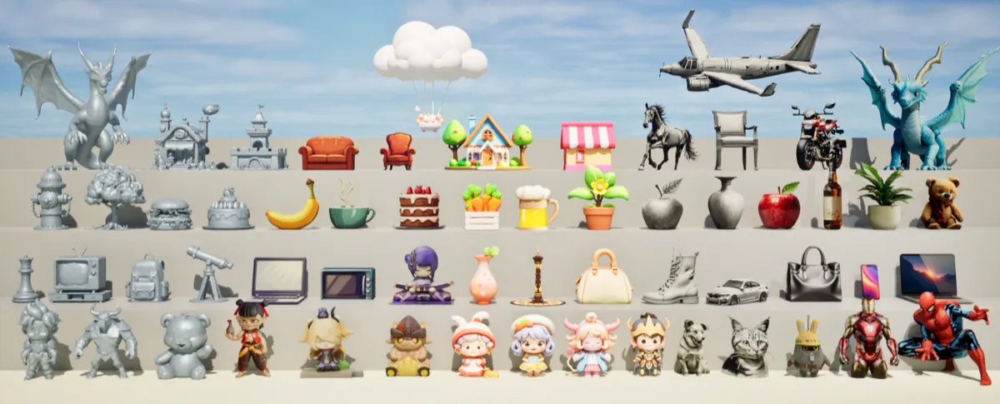

About Me
I am a Ph.D. candidate at HKUST,
advised by Prof. Ping Tan.
Prior to this, I earned my Master's and Bachelor's degrees in 2023 and 2020 from the
Interdisciplinary Research Center (IRC), Shandong University,
where I was honored to be advised by
Prof. Baoquan Chen.
I also worked at the Visual Computing and Learning Lab (VCL-PKU) during my master period.
I have been fortunate to intern at Meta AI with
Prof. Andrea Vedaldi,
StepFun with Xuanyang Zhang,
Adobe with
Dr. Tuanfeng Y. Wang,
and Tencent AI Lab with
Dr. Xuelin Chen and Dr. Jue Wang.
My research focuses on
3D Content Generation, with broader interests in
Point Cloud Processing, Efficient Computer Vision, and HCI with AR.
I am fascinated by how we can capture, generate, and interact with the 3D world in virtual spaces.
My goal is to build expressive and controllable virtual worlds with the help of AI.
News
- One paper was selected as a CVPR 2026 highlight.
- One paper was selected as a CVPR 2025 oral presentation.
- One paper was accepted to ICLR 2024.
- One paper was accepted to SIGGRAPH 2023 (TOG).
- One paper was accepted to Eurographics 2022.
- Won two special prizes in the Pilot Cup National University High Performance Computing Competition with RMB 200k bonus.
Publications all publications

Experience
| Meta AI | Research intern | London, UK |
| StepFun | Research intern | Remote |
| Adobe | Research intern | London, UK |
| Tencent AI-Lab | Research intern | Shenzhen, China |
| VCL Lab, Peking University | Visiting student | Beijing, China |
| AICFVE, Beijing Film Academy | Research intern | Remote |
Awards & Honors
- Two Special prizes in RPA Parallel Computing Competition of Chinese Academy of Sciences ($30k)
- The First Prize in the 12th Intel Cup Undergraduate Software Innovation Competition ($2.2k)
- Two Second Prizes in Asian Student Supercomputer Challenge (ASC 2018 and 2019)
- The Second Prize in China Undergraduate Mathematical Contest in Modeling
- The First scholarship and titled the Superior Student in Shandong University (three times)